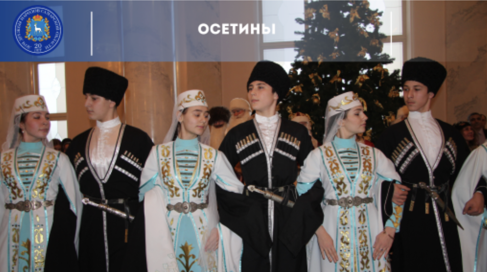

Осетины говорят на осетинском языке, который принадлежит к североиранской группе иранских языков. Этот язык имеет два диалекта: дигорский и иронский. Осетинский язык обладает своей системой письма, основанной на кириллице.
Осетины говорят на осетинском языке, который принадлежит к североиранской группе иранских языков. Этот язык имеет два диалекта: дигорский и иронский. Осетинский язык обладает своей системой письма, основанной на кириллице.
Традиционная одежда осетин часто отражает культурные и этнические особенности региона. У мужчин традиционная одежда может включать в себя высокие шерстяные шапки, нагрудные платки, жилеты и широкие брюки. У женщин традиционное платье обычно декорировано вышивкой, бисером и другими украшениями.
Осетины – это горцы, и их быт традиционно связан с трудами по сельскому хозяйству, скотоводству и ремесленным делам. Традиционная осетинская кухня включает в себя множество мясных блюд, таких как пироги с мясом, шашлык и различные супы. Горцы также известны своим гостеприимством и традицией приглашать гостей на обильные пиршества.
Осетины преимущественно исповедуют христианство. Большинство осетин принадлежат к православной церкви, но также существует небольшое количество осетин-мусульман, особенно в южных регионах. Верования осетин могут также быть пропитаны элементами местных языческих традиций и обрядов.
Осетины обладают богатым литературным наследием. У них есть свои национальные эпосы, такие как "Нартский эпос", который рассказывает о героях и событиях осетинской мифологии. Осетины также развивают современную литературу на своем языке, включая поэзию, прозу и драматургию.
|  |